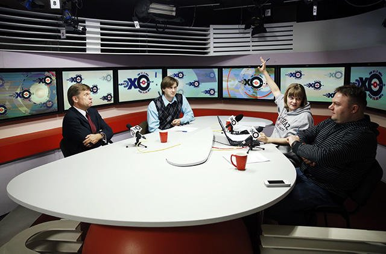

Продолжение атак на «Эхо Москвы»
Акционеры «Эха Москвы» назначили на 21 ноября заочное голосование совета директоров радиостанции.Глава «Газпром-медиа» Михаил Лесин (холдингу принадлежит 66% «Эха») заявил, что на совете будут поставлены вопросы о формате радиостанции, ее редакции и о главном редакторе Алексее Венедиктове.
Совет директоров обладает полномочиями уволить Алексея Венедиктова.Если за отставку главного редактора проголосует большинство, руководство радиостанцией перейдет одному из первых заместителей Венедиктова — Владимиру Варфоломееву или Сергею Бунтману.
В интервью спецкору «Медузы» Андрею Козенко Сергей Бунтман рассказал, что обсуждение Венедиктова на совете директоров — логичное продолжение атак на «Эхо Москвы».По словам Бунтмана, эти атаки исходят не только от Михаила Лесина.
— Что означает этот созыв совета директоров?Правильно ли я понимаю, что он внеплановый?
— Совершенно верно, это внеплановый созыв, и это будет заочное голосование по трем пунктам, обозначенным в повестке.О главном редакторе «Эха Москвы», о редакции и о редакционной политике.Пункты, как вы видите, настолько общие, насколько это вообще возможно.Конкретнее все станет понятно, когда члены совета директоров пришлют свои заполненные бюллетени.
— Что такое, в случае с вашим уставом, заочное голосование, проводилось ли оно когда-либо ранее?
— Проводилось, здесь как раз ничего необычного.Кандидатура главного редактора, например, утверждалась заочным голосованием.
— Но как можно заочно высказаться и проголосовать, например, по редакционной политике «Эха Москвы»?
— А это еще не сами вопросы повестки дня совета директоров.Это уведомление о том, какие вопросы будут обсуждаться.Конкретные вопросы будут чуть позже.Например, давайте сделаем Венедиктова пожизненным главным редактором.Или же давайте наградим коллектив «Эха Москвы» за отличную работу и расширим его.Обращу ваше внимание, что информацию о совете директоров первым слил именно Лесин — «Ведомостям».Мы же опубликовали на сайте этот документ только после.Не молчать же в такой ситуации.
— Вы как бы ее по состоянию на этот вечер охарактеризовали?
— Нам прислали черную метку.Это очередная серия из тех прекрасных наездов, которые продолжаются уже не первый день.Это и пожарная проверка, это уведомление Роскомнадзора, это абсолютно незаконное увольнение Саши Плющева.Из-за которого, как вы знаете, уже мы обратились в трудовую инспекцию, и она очень заинтересовалась этим случаем.Все происходящее я могу расценивать однозначно: это попытка уничтожить редакцию.
— Насколько я понимаю, расклад сил в совете директоров позволяет уволить Алексея Венедиктова?
— Да, это так.Совет директоров может снять главного редактора.Нового только назначить не может.И вот здесь и будет очень интересно, что скрывается за формулировкой об обсуждении редакционной политики.Возможно, речь пойдет о новой лицензии.Возможно, вообще о полном переформатировании нынешней редакционной политики.Или о таких изменениях в устав, которые дадут больше прав совету директоров в вопросе о выборах главного редактора.То, что сейчас мы — доходная, успешная, самая цитируемая радиостанция — увы, отошло на второй план.
— Александр Плющев все же продолжает оставаться действующим сотрудником редакции?
— Мы его рассматриваем в качестве нашего сотрудника, да, это так.Есть сложности с тем, что его, как вы знаете, не пускают в наше здание.Но в понедельник он обращается в суд с иском, где оспорит свое увольнение, которое мы в редакции считаем незаконным.
— Компромисс между Лесиным и Венедиктовым, на ваш взгляд, еще возможен или это уже лобовая атака?
— Мы, обращу ваше внимание, Лесина не атаковали.Все инициативы идут с его стороны.Вот, и совет директоров собирает тоже он.Компромисс… Я так скажу: возможно лимита компромиссов, на которые были готовы пойти мы, уже недостаточно для Михаила Лесина и других людей, которые, безусловно, тоже участвуют в этой истории.
Источник: Медуза.

Posted On: 2014-11-14T21:00:00
Content Date: 2014-11-14
Download Date: 2021-07-16
Document ID: L0C04FILX